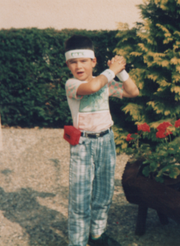

Ludovic
JORGE DO MARCO
Fullstack développeur "Junior"
15 ans d'expérience dans l'accompagnement client
Compétences

Compétences
PHP - Avancé
Html
Javascript
Python
Css
Laravel
Tailwindcss
Formations
Projets
Social